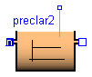
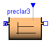

This package provides one dynamic and two static ASM3 primary clarifier models based on Otterpohl [1]. Main Author: Gerald Reichl Technische Universitaet Ilmenau Faculty of Informatics and Automation Department Dynamics and Simulation of ecological Systems P.O. Box 10 05 65 98684 Ilmenau Germany email: gerald.reichl@tu-ilmenau.de Reference: [1] R. Otterpohl and M. Freund: Dynamic models for clarifier of activated sludge plants with dry and wet weather flows. Water Science and Technology. 26 (1992), pp. 1391-1400.
Copyright (C) 2002 - 2003, Gerald Reichl
The Modelica package is free software; it can be redistributed and/or modified under the terms of the Modelica license, see the license conditions and the accompanying disclaimer in the documentation of package Modelica in file "Modelica/package.mo".
WasteWater.ASM3.PreClar.preclar1

This is an ASM3 dynamic primary clarifier model based on the theory by Otterpohl and Freund.
| Name | Default | Description |
|---|---|---|
| f_Si | 0.0 | Production of Si in hydrolysis [g COD_Si/(g COD_Xs)] |
| Y_STO_O | 0.85 | Aerobic yield of stored product per Ss [g COD_Xsto/(g COD_Ss)] |
| Y_STO_NOX | 0.80 | Anoxic yield of stored product per Ss [g OD_Xsto/(g COD_Ss)] |
| Y_H_O | 0.63 | Aerobic yield of heterotrophic biomass [g COD_Xh/(g COD_Xsto)] |
| Y_H_NOX | 0.54 | Anoxic yield of heterotrophic biomass [g COD_Xh/(g COD_Xsto)] |
| Y_A | 0.24 | Yield of autotrophic biomass per NO3-N [g COD_Xa/(g N_Snox)] |
| f_Xi | 0.20 | Production of Xi in endog. respiration [g COD_Xi/(g COD_Xbm)] |
| i_N_Si | 0.01 | N content of Si [g N/(g COD_Si)] |
| i_N_Ss | 0.03 | N content of Ss [g N/(g COD_Ss)] |
| i_N_Xi | 0.02 | N content of Xi [g N/(g COD_Xi)] |
| i_N_Xs | 0.04 | N content of Xs [g N/(g COD_Xs)] |
| i_N_BM | 0.07 | N content of biomass Xh,Xa [g N/(g COD_bm)] |
| i_SS_Xi | 0.75 | SS to COD ratio for Xi [g SS/(g COD_Xi)] |
| i_SS_Xs | 0.75 | SS to COD ratio for Xs [g SS/(g COD_Xs)] |
| i_SS_BM | 0.90 | SS to COD ratio for biomass Xh,Xa [g SS/(g COD_Xbm)] |
| V | 500 | Volume of primary clarifier tank [m3] |
model preclar1 "Dynamic ASM3 Primary Clarifier Model" // dynamic primary clarifier tank, based on Otterpohl // to be used for feed forward calculation, e.g. influent data needed import Modelica.Math.log; package WWU = WasteWaterUnits; extends WasteWater.Icons.preclar1; extends ASM3.Interfaces.stoichiometry; // tank specific parameters parameter Modelica.SIunits.Volume V=500 "Volume of primary clarifier tank"; Real hrt_h "hydraulic residence time in primary sedimentation tank [h]"; //Real hrt_min "hydraulic residence time in primary sedimentation tank [min]"; Real n_COD "efficiency of COD removal [%]"; Real n_X "efficiency transformed to particulate fractions [%]"; Real CODin; Real CODout; Real XCODin; Real H; WWU.MassConcentration So "Dissolved oxygen"; WWU.MassConcentration Si "Soluble inert organics"; WWU.MassConcentration Ss "Readily biodegradable substrates"; WWU.MassConcentration Snh "Ammonium"; WWU.MassConcentration Sn2 "Dinitrogen, released by nitrification"; WWU.MassConcentration Snox "Nitrite plus nitrate"; WWU.Alkalinity Salk "Alkalinity, bicarbonate"; WWU.MassConcentration Xi "Inert particulate organics"; WWU.MassConcentration Xs "Slowly biodegradable substrates"; WWU.MassConcentration Xh "Heterotrophic biomass"; WWU.MassConcentration Xsto "Organics stored by heterotrphs"; WWU.MassConcentration Xa "Autotrophic nitrifying biomass"; //WWU.MassConcentration Xss "Total suspend solids"; ASM3.Interfaces.WWFlowAsm3in In; ASM3.Interfaces.WWFlowAsm3out Out; ASM3.Interfaces.WWFlowAsm3out MeasurePort; equation // calculation of the hydraulic residence time hrt_h = V/In.Q*24; //hrt_min = V/In.Q * 24 * 60; // n_COD according Otterpohl and Freund 1992 "Dynamic Models for Clarifiers" n_COD = 2.7*(log(hrt_h*hrt_h) + 9)/100; // n_COD according Otterpohl 1995, Dissertation // n_COD = (1.45 + 6.15 * log(hrt_min))/100; XCODin = In.Xi + In.Xs + In.Xh + In.Xsto + In.Xa; // particulate COD in the influent CODin = In.Si + In.Ss + XCODin; // total COD in the influent CODout = Out.Si + Out.Ss + Out.Xi + Out.Xs + Out.Xh + Out.Xsto + Out.Xa; // n_X can not be greater than 1 H = n_COD*CODin/XCODin; // therefore this check n_X = if H > 0.95 then 0.95 else if H < 0.05 then 0.05 else H; // in this case the model needs to be modified by a new n_COD // n_COD_? = (2.88*XCODin/CODin - 0.118) * n_COD; // volume dependent dilution term of each concentration der(So) = (In.So - So)*In.Q/V; der(Si) = (In.Si - Si)*In.Q/V; der(Ss) = (In.Ss - Ss)*In.Q/V; der(Snh) = (In.Snh - Snh)*In.Q/V; der(Sn2) = (In.Sn2 - Sn2)*In.Q/V; der(Snox) = (In.Snox - Snox)*In.Q/V; der(Salk) = (In.Salk - Salk)*In.Q/V; der(Xi) = (In.Xi - Xi)*In.Q/V; der(Xs) = (In.Xs - Xs)*In.Q/V; der(Xh) = (In.Xh - Xh)*In.Q/V; der(Xsto) = (In.Xsto - Xsto)*In.Q/V; der(Xa) = (In.Xa - Xa)*In.Q/V; //der(Xss) = (In.Xss - Xss)*In.Q/V; // Outputs // this is just a reduction of particulate substances; n_X*X is not stored // so the amount of primary sludge removed can not be calculated Out.Q + In.Q = 0; Out.So = So; Out.Si = Si; Out.Ss = Ss; Out.Snh = Snh; Out.Sn2 = Sn2; Out.Snox = Snox; Out.Salk = Salk; Out.Xi = (1 - n_X)*Xi; Out.Xs = (1 - n_X)*Xs; Out.Xh = (1 - n_X)*Xh; Out.Xsto = (1 - n_X)*Xsto; Out.Xa = (1 - n_X)*Xa; Out.Xss = i_SS_Xi*Out.Xi + i_SS_Xs*Out.Xs + i_SS_BM*Out.Xh + 0.60*Out.Xsto + i_SS_BM*Out.Xa; MeasurePort.So = So; MeasurePort.Si = Si; MeasurePort.Ss = Ss; MeasurePort.Snh = Snh; MeasurePort.Sn2 = Sn2; MeasurePort.Snox = Snox; MeasurePort.Salk = Salk; MeasurePort.Xi = (1 - n_X)*Xi; MeasurePort.Xs = (1 - n_X)*Xs; MeasurePort.Xh = (1 - n_X)*Xh; MeasurePort.Xsto = (1 - n_X)*Xsto; MeasurePort.Xa = (1 - n_X)*Xa; MeasurePort.Xss = i_SS_Xi*Out.Xi + i_SS_Xs*Out.Xs + i_SS_BM*Out.Xh + 0.60*Out.Xsto + i_SS_BM*Out.Xa; end preclar1;
WasteWater.ASM3.PreClar.preclar2
This is an ASM3 static primary clarifier model based on the theory by Otterpohl and Freund.
| Name | Default | Description |
|---|---|---|
| f_Si | 0.0 | Production of Si in hydrolysis [g COD_Si/(g COD_Xs)] |
| Y_STO_O | 0.85 | Aerobic yield of stored product per Ss [g COD_Xsto/(g COD_Ss)] |
| Y_STO_NOX | 0.80 | Anoxic yield of stored product per Ss [g OD_Xsto/(g COD_Ss)] |
| Y_H_O | 0.63 | Aerobic yield of heterotrophic biomass [g COD_Xh/(g COD_Xsto)] |
| Y_H_NOX | 0.54 | Anoxic yield of heterotrophic biomass [g COD_Xh/(g COD_Xsto)] |
| Y_A | 0.24 | Yield of autotrophic biomass per NO3-N [g COD_Xa/(g N_Snox)] |
| f_Xi | 0.20 | Production of Xi in endog. respiration [g COD_Xi/(g COD_Xbm)] |
| i_N_Si | 0.01 | N content of Si [g N/(g COD_Si)] |
| i_N_Ss | 0.03 | N content of Ss [g N/(g COD_Ss)] |
| i_N_Xi | 0.02 | N content of Xi [g N/(g COD_Xi)] |
| i_N_Xs | 0.04 | N content of Xs [g N/(g COD_Xs)] |
| i_N_BM | 0.07 | N content of biomass Xh,Xa [g N/(g COD_bm)] |
| i_SS_Xi | 0.75 | SS to COD ratio for Xi [g SS/(g COD_Xi)] |
| i_SS_Xs | 0.75 | SS to COD ratio for Xs [g SS/(g COD_Xs)] |
| i_SS_BM | 0.90 | SS to COD ratio for biomass Xh,Xa [g SS/(g COD_Xbm)] |
| V | 500 | Volume of primary clarifier tank [m3] |
model preclar2 "Static ASM3 Primary Clarifier Model"
// static primary clarifier tank, based on Otterpohl
// to be used for feed forward calculation, e.g. influent data needed
import Modelica.Math.log;
package WWU = WasteWaterUnits;
extends WasteWater.Icons.preclar2;
extends ASM3.Interfaces.stoichiometry;
// tank specific parameters
parameter Modelica.SIunits.Volume V=500 "Volume of primary clarifier tank";
Real hrt_h "hydraulic residence time in primary sedimentation tank [h]";
//Real hrt_min "hydraulic residence time in primary sedimentation tank [min]";
Real n_COD "efficiency of COD removal [%]";
Real n_X "efficiency transformed to particulate fractions [%]";
Real CODin;
Real CODout;
Real XCODin;
Real H;
WWU.MassConcentration So "Dissolved oxygen";
WWU.MassConcentration Si "Soluble inert organics";
WWU.MassConcentration Ss "Readily biodegradable substrates";
WWU.MassConcentration Snh "Ammonium";
WWU.MassConcentration Sn2 "Dinitrogen, released by nitrification";
WWU.MassConcentration Snox "Nitrite plus nitrate";
WWU.Alkalinity Salk "Alkalinity, bicarbonate";
WWU.MassConcentration Xi "Inert particulate organics";
WWU.MassConcentration Xs "Slowly biodegradable substrates";
WWU.MassConcentration Xh "Heterotrophic biomass";
WWU.MassConcentration Xsto "Organics stored by heterotrphs";
WWU.MassConcentration Xa "Autotrophic nitrifying biomass";
//WWU.MassConcentration Xss "Total suspend solids";
ASM3.Interfaces.WWFlowAsm3in In;
ASM3.Interfaces.WWFlowAsm3out Out;
ASM3.Interfaces.WWFlowAsm3out MeasurePort;
equation
// calculation of the hydraulic residence time
hrt_h = V/In.Q*24;
//hrt_min = V/In.Q * 24 * 60;
// n_COD according Otterpohl and Freund 1992 "Dynamic Models for Clarifiers"
n_COD = 2.7*(log(hrt_h*hrt_h) + 9)/100;
// n_COD according Otterpohl 1995, Dissertation
// n_COD = (1.45 + 6.15 * log(hrt_min))/100;
XCODin = In.Xi + In.Xs + In.Xh + In.Xsto + In.Xa;
// particulate COD in the influent
CODin = In.Si + In.Ss + XCODin;
// total COD in the influent
CODout = Out.Si + Out.Ss + Out.Xi + Out.Xs + Out.Xh + Out.Xsto + Out.Xa;
// n_X can not be greater than 1
H = n_COD*CODin/XCODin;
// therefore this check
n_X = if H > 0.95 then 0.95 else if H < 0.05 then 0.05 else H;
// in this case the model needs to be modified by a new n_COD
// n_COD_? = (2.88*XCODin/CODin - 0.118) * n_COD;
// volume dependent dilution term of each concentration
0 = (In.So - So)*In.Q/V;
0 = (In.Si - Si)*In.Q/V;
0 = (In.Ss - Ss)*In.Q/V;
0 = (In.Snh - Snh)*In.Q/V;
0 = (In.Sn2 - Sn2)*In.Q/V;
0 = (In.Snox - Snox)*In.Q/V;
0 = (In.Salk - Salk)*In.Q/V;
0 = (In.Xi - Xi)*In.Q/V;
0 = (In.Xs - Xs)*In.Q/V;
0 = (In.Xh - Xh)*In.Q/V;
0 = (In.Xsto - Xsto)*In.Q/V;
0 = (In.Xa - Xa)*In.Q/V;
//0 = (In.Xss - Xss)*In.Q/V;
// Outputs
// this is just a reduction of particulate substances; n_X*X is not stored
// so the amount of primary sludge removed can not be calculated
Out.Q + In.Q = 0;
Out.So = So;
Out.Si = Si;
Out.Ss = Ss;
Out.Snh = Snh;
Out.Sn2 = Sn2;
Out.Snox = Snox;
Out.Salk = Salk;
Out.Xi = (1 - n_X)*Xi;
Out.Xs = (1 - n_X)*Xs;
Out.Xh = (1 - n_X)*Xh;
Out.Xsto = (1 - n_X)*Xsto;
Out.Xa = (1 - n_X)*Xa;
Out.Xss = i_SS_Xi*Out.Xi + i_SS_Xs*Out.Xs + i_SS_BM*Out.Xh + 0.60*Out.Xsto
+ i_SS_BM*Out.Xa;
MeasurePort.So = So;
MeasurePort.Si = Si;
MeasurePort.Ss = Ss;
MeasurePort.Snh = Snh;
MeasurePort.Sn2 = Sn2;
MeasurePort.Snox = Snox;
MeasurePort.Salk = Salk;
MeasurePort.Xi = (1 - n_X)*Xi;
MeasurePort.Xs = (1 - n_X)*Xs;
MeasurePort.Xh = (1 - n_X)*Xh;
MeasurePort.Xsto = (1 - n_X)*Xsto;
MeasurePort.Xa = (1 - n_X)*Xa;
MeasurePort.Xss = i_SS_Xi*Out.Xi + i_SS_Xs*Out.Xs + i_SS_BM*Out.Xh
+ 0.60*Out.Xsto + i_SS_BM*Out.Xa;
end preclar2;
Inverse ASM3 Static Primary Clarifier Model

This is a special case of the ASM3 static primary clarifier model. Here measurement data at the end (effluent) of the preclarifier needs to be provided. This is typical for some real plants. Influent is then calculated. Dimension of InPort is 4: 1 - Chemical Oxygen Demand (COD) at effluent of primary clarifier 2 - nitrate nitrogen (Sno) at effluent of primary clarifier 3 - ammonium nitrogen (Snh) at effluent of primary clarifier 4 - pH-value at effluent of primary clarifier
| Name | Default | Description |
|---|---|---|
| f_Si | 0.0 | Production of Si in hydrolysis [g COD_Si/(g COD_Xs)] |
| Y_STO_O | 0.85 | Aerobic yield of stored product per Ss [g COD_Xsto/(g COD_Ss)] |
| Y_STO_NOX | 0.80 | Anoxic yield of stored product per Ss [g OD_Xsto/(g COD_Ss)] |
| Y_H_O | 0.63 | Aerobic yield of heterotrophic biomass [g COD_Xh/(g COD_Xsto)] |
| Y_H_NOX | 0.54 | Anoxic yield of heterotrophic biomass [g COD_Xh/(g COD_Xsto)] |
| Y_A | 0.24 | Yield of autotrophic biomass per NO3-N [g COD_Xa/(g N_Snox)] |
| f_Xi | 0.20 | Production of Xi in endog. respiration [g COD_Xi/(g COD_Xbm)] |
| i_N_Si | 0.01 | N content of Si [g N/(g COD_Si)] |
| i_N_Ss | 0.03 | N content of Ss [g N/(g COD_Ss)] |
| i_N_Xi | 0.02 | N content of Xi [g N/(g COD_Xi)] |
| i_N_Xs | 0.04 | N content of Xs [g N/(g COD_Xs)] |
| i_N_BM | 0.07 | N content of biomass Xh,Xa [g N/(g COD_bm)] |
| i_SS_Xi | 0.75 | SS to COD ratio for Xi [g SS/(g COD_Xi)] |
| i_SS_Xs | 0.75 | SS to COD ratio for Xs [g SS/(g COD_Xs)] |
| i_SS_BM | 0.90 | SS to COD ratio for biomass Xh,Xa [g SS/(g COD_Xbm)] |
| V | 500 | Volume of primary clarifier tank [m3] |
| aSo | 0.0 | Dissolved oxygen in the inflow [mg/l] |
| aSi | 5/100 | Fraction of Si of the total COD in the influent |
| aSs | 15/100 | Fraction of Ss of the total COD in the influent |
| aXi | 15/100 | Fraction of Xi of the total COD in the influent |
| aXs | 45/100 | Fraction of Xs of the total COD in the influent |
| aXh | 20/100 | Fraction of Xh of the total COD in the influent |
| aXsto | 0/100 | Fraction of Xsto of the total COD in the influent |
| aXa | 0/100 | Fraction of Xa of the total COD in the influent |
| n_corr | 1.0 | Correction faktor for the efficiency function |
model preclar3 "Inverse ASM3 Static Primary Clarifier Model"
// static primary clarifier tank
// to be used for backward calculation, e.g. effluent data for total
// signals need to be in the secuence COD, Snox, Snh, pH in the inputtable
import Modelica.Math.log;
package WWU = WasteWater.WasteWaterUnits;
extends WasteWater.Icons.preclar2;
extends ASM3.Interfaces.stoichiometry;
// tank specific parameters
parameter Modelica.SIunits.Volume V=500 "Volume of primary clarifier tank";
parameter Real aSo=0.0 "Dissolved oxygen in the inflow [mg/l]";
parameter Real aSi=5/100 "Fraction of Si of the total COD in the influent";
parameter Real aSs=15/100 "Fraction of Ss of the total COD in the influent";
parameter Real aXi=15/100 "Fraction of Xi of the total COD in the influent";
parameter Real aXs=45/100 "Fraction of Xs of the total COD in the influent";
parameter Real aXh=20/100 "Fraction of Xh of the total COD in the influent";
parameter Real aXsto=0/100
"Fraction of Xsto of the total COD in the influent";
parameter Real aXa=0/100 "Fraction of Xa of the total COD in the influent";
parameter Real n_corr=1.0 "Correction faktor for the efficiency function";
Real hrt_h "hydraulic residence time in primary sedimentation tank [h]";
//Real hrt_min "hydraulic residence time in primary sedimentation tank [min]";
Real n_COD "efficiency of COD removal [%]";
Real n_X "efficiency transformed to particulate fractions [%]";
Real COD;
Real CODin;
Real CODout;
Real XCOD;
Real H;
// Interfaces.MeasurePort MeasurePort annotation (extent=[32, 90; 42, 100]);
WWU.MassConcentration So "Dissolved oxygen";
WWU.MassConcentration Si "Soluble inert organics";
WWU.MassConcentration Ss "Readily biodegradable substrates";
WWU.MassConcentration Snh "Ammonium";
WWU.MassConcentration Sn2 "Dinitrogen, released by nitrification";
WWU.MassConcentration Snox "Nitrite plus nitrate";
WWU.Alkalinity Salk "Alkalinity, bicarbonate";
WWU.MassConcentration Xi "Inert particulate organics";
WWU.MassConcentration Xs "Slowly biodegradable substrates";
WWU.MassConcentration Xh "Heterotrophic biomass";
WWU.MassConcentration Xsto "Organics stored by heterotrphs";
WWU.MassConcentration Xa "Autotrophic nitrifying biomass";
//WWU.MassConcentration Xss "Total suspend solids";
ASM3.Interfaces.WWFlowAsm3in In;
ASM3.Interfaces.WWFlowAsm3out Out;
Modelica.Blocks.Interfaces.InPort MeasurePort(final n=4);
equation
// calculation of the hydraulic residence time
hrt_h = V/In.Q*24;
//hrt_min = V/In.Q * 24 * 60;
// n_COD according Otterpohl and Freund 1992 "Dynamic Models for Clarifiers"
n_COD = n_corr*2.7*(log(hrt_h*hrt_h) + 9)/100;
// n_COD according Otterpohl 1995, Dissertation
// n_COD = n_corr*(1.45 + 6.15 * log(hrt_min))/100;
XCOD = In.Xi + In.Xs + In.Xh + In.Xsto + In.Xa;
// particulate COD in the influent
COD = In.Si + In.Ss + XCOD;
// total COD in the influent
CODin = MeasurePort.signal[1]/(1 - n_COD);
// total COD in the influent
// above two CODs sould be the same
CODout = Out.Si + Out.Ss + Out.Xi + Out.Xs + Out.Xh + Out.Xsto + Out.Xa;
// this should be the same as MeasurePort.signal[1]
// n_X can not be greater than 1
H = n_COD*COD/XCOD;
// therefor this check
n_X = if H > 0.95 then 0.95 else if H < 0.05 then 0.05 else H;
// in this case the model needs to be modified by a new n_COD
// n_COD_? = (2.88*XCODin/CODin - 0.118) * n_COD;
// volume dependent dilution term of each concentration
0 = (In.So - So)*In.Q/V;
0 = (In.Si - Si)*In.Q/V;
0 = (In.Ss - Ss)*In.Q/V;
0 = (In.Snh - Snh)*In.Q/V;
0 = (In.Sn2 - Sn2)*In.Q/V;
0 = (In.Snox - Snox)*In.Q/V;
0 = (In.Salk - Salk)*In.Q/V;
0 = (In.Xi - Xi)*In.Q/V;
0 = (In.Xs - Xs)*In.Q/V;
0 = (In.Xh - Xh)*In.Q/V;
0 = (In.Xsto - Xsto)*In.Q/V;
0 = (In.Xa - Xa)*In.Q/V;
//0 = (In.Xss - Xss)*In.Q/V;
Out.Q + In.Q = 0;
// Inputs
In.So = aSo;
In.Si = aSi*CODin;
In.Ss = aSs*CODin;
In.Snh = MeasurePort.signal[3];
In.Sn2 = 0.0;
In.Snox = MeasurePort.signal[2];
In.Salk = 1.8*exp(MeasurePort.signal[4] - 6.4);
In.Xi = aXi*CODin;
In.Xs = aXs*CODin;
In.Xh = aXh*CODin;
In.Xsto = aXsto*CODin;
In.Xa = aXa*CODin;
In.Xss = i_SS_Xi*In.Xi + i_SS_Xs*In.Xs + i_SS_BM*In.Xh
+ 0.60*In.Xsto + i_SS_BM*In.Xa;
// Outputs
Out.So = So;
Out.Si = Si;
Out.Ss = Ss;
Out.Snh = Snh;
Out.Sn2 = Sn2;
Out.Snox = Snox;
Out.Salk = Salk;
Out.Xi = (1 - n_X)*Xi;
Out.Xs = (1 - n_X)*Xs;
Out.Xh = (1 - n_X)*Xh;
Out.Xsto = (1 - n_X)*Xsto;
Out.Xa = (1 - n_X)*Xa;
Out.Xss = i_SS_Xi*Out.Xi + i_SS_Xs*Out.Xs + i_SS_BM*Out.Xh
+ 0.60*Out.Xsto + i_SS_BM*Out.Xa;
end preclar3;